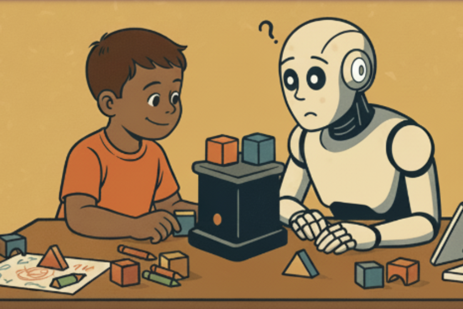
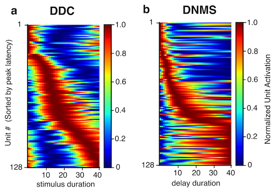
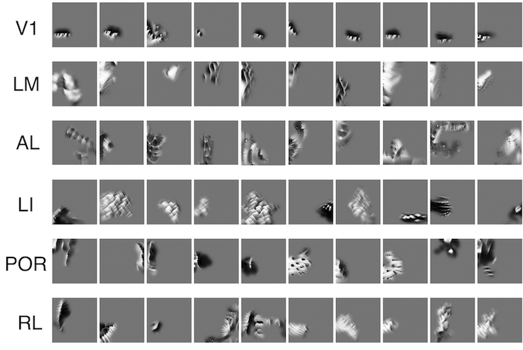
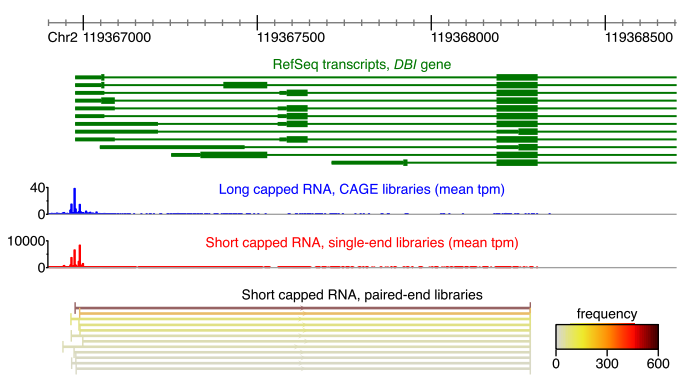

Research
Hello there! My name is Dongyan (pronounced Dong-yan), I am a researcher in the Fundamental AI Research (FAIR) team at Meta in NYC, working on building AI models that think and act more human-like. Previously I did my PhD at Integrated Program in Neuroscience at McGill University and Mila, supervised by Blake Richards. My research interest lies at the intersection of artificial intelligence and neuroscience. Specifically, I am interested in unraveling the general principles that govern both biological and artificial intelligence, through the lens of representation learning.
Projects
Language Agents Mirror Human Causal Reasoning Biases

Do LLMs think like scientists or do they just copy our mistakes? We tested AI agents on the classic 'Blicket Test' and found they share our human 'disjunctive bias'—preferring simple causes over complex ones. We propose a new hypothesis-sampling method to help AI reason more logically.
(A. GX-Chen, Lin et al., 2025 COLM)
Reconciling the Sherringtonian and Hopfieldian views on neural computations

Is the brain a collection of individual switches or a flowing sea of data? This project bridges the two biggest schools of thought in neuroscience, arguing that we don't have to choose between 'neurons' and 'manifolds'—the magic happens in how the wiring shapes the flow. We organized a GAC workshop to bring together researchers whose work provides different perspectives on the two paradigms.
(CCN 2023 workshop recording / Proposal)
Temporal encoding in Deep Reinforcement Learning agents

How do robots—and humans—keep track of time? We discovered that AI agents trained to wait for rewards spontaneously develop 'time cells' and 'ramping cells' just like the ones found in the hippocampus. It turns out that tracking time isn't just a clock; it's a dynamic map used to decide what to do next.
(Lin et al., 2023 Sci Rep)
Deep-learning generated optimized images reveal tuning landscape in mouse higher visual cortex

"What do neurons in the visual cortex like to see? Do neurons in different visual areas like to see different images?" We show that mouse higher visual areas indeed prefer different visual stimuli, but their tuning landscape is more complex than single-neuron preference!
(Preprint / SfN 2022)
Deep sequencing of short capped RNAs reveals novel families of noncoding RNAs

We developed a sequencing protocol for short capped RNAs, applied it to the human cell line THP-1, and compared it with the landscape of long capped RNAs, discovering distinct transcription initiation preferences and associations with disease SNPs.
(de Hoon et al., 2022 Genome Research)
Personal
The purpose of this page is to share with you some of the things that I enjoy outside the lab. (Nov 2023 quick note: I don't update this page often (like, once every 3 years), so it's not the most up-to-date reflection of my taste and preference, which change over time. Feel free to chat with me to see what I'm into currently.)
Music, TV, Movies
Below are some of my go-to albums:


My all-time favourite TV show is Breaking Bad. Honourable mentions include: BoJack Horseman, Friends, The Newsroom, and How I Met Your Mother.
I really like the early works of Quentin Tarantino.
Curriculum Vitae
You can download my (slightly outdated) CV here.